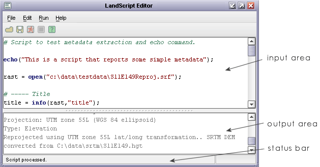

LandScript allows LandSerf to perform operations on spatial data by issuing commands within a script. This has the advantage of allowing repeated tasks to be carried out easily such as combining many rasters together. By issuing commands from within a script, you can document, reuse and share sequences of operations using LandSerf.
Most of the operations available via menus in LandSerf can be executed using LandScript. In addition, numbers, strings of text and entire spatial objects can be stored and manipulated in variables and actions repeated in loops. This allows sophisticated map algebra operations to be built up without the need for knowledge of programming in Java. Since scripting involves no graphical interaction, operations can be faster and will use up less memory than their equivalent from within LandSerf.
Scripts can be edited and run by using the LandScript Editor (either started directly or selected from the
File menu within LandSerf). Alternatively, they can be created in any text editor and run directly from
the command line. All saved scripts should have the extension .lsc to identify them as LandScript files.
They can be loaded into the editor using the  button or the
button or the File->Open menu.
The advantages of using the LandScript Editor include coloured syntax highlighting, the ability to validate code before it is run, the separation of error reporting from standard output and the ability to stop scripts running mid-program.
LandScript can be laid out as you like, as long as each command line is separated by a semicolon. The LandScript editor will colour the elements of the script according to the following rules
comments are coloured in green, should have a # symbol at the start of the line and are ignored by the LandScript interpreter.commands, functions, keywords are coloured in blue, and are special words reserved by LandSerf (see below for details).text strings" are coloured in red and should be enclosed in quotes.global variables are coloured mid-grey.local variables, numbers and other characters are coloured in black.
When you run a script (by pressing the button or selecting the
Run->Run menu), any text output is displayed in the output area of the editor. Normal text is displayed in grey, and
any errors in red. The status bar of the window will summarise the part of the script that may be causing problems should there be any
errors in the interpreted script. A running script can be stopped at any point by pressing the
button (or the Run->Stop menu). When writing LandScript that involves much processing it can be useful to test
the code before running it. Selecting the Run->Validate menu item will parse the code looking for syntax, command
or typecasting errors without actually issuing the commands themselves.
All of the controls above as well as standard editing operations have keyboard shortcuts to speed up the write-test-debug-run cycle:
| Control | Shortcut* | |
| Run | Ctrl-R | |
| Stop | Ctrl-P | |
| Validate | Ctrl-D | |
| Copy selected text in editor | Ctrl-C | |
| Cut selected text from editor | Ctrl-X | |
| Paste text into editor | Ctrl-V | |
| Undo last text edit | Ctrl-Z | |
| Redo last undone text edit | Ctrl-Y |
*On the Mac, use the Command ('Apple') key with the relevant shortcut letter.